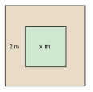
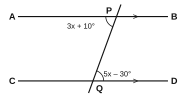

| For examiner's use only | |
|---|---|
| PART I – A | / 30 |
| PART I – B | / 20 |
| PART II | / 50 |
| Total | / 100 |
Part A – Answer all questions in the space provided. (2 marks each)
Write the next two terms of the number pattern 2, 6, 12, 20, 30, …
Which is greater, 110012 or 26? Show your working.
Find the value of 35 of 212.
Increase Rs 250 by 20%.
Factorise: 6ab − 9ac
Find the value: 50 + 2−1
Simplify and give the answer in scientific notation: (2 × 103) × (4 × 102)
Solve: 3x4 = 9
Two straight lines intersect as shown in the figure. Find the value of x.
The angles of a triangle are x, x + 20° and x + 40°. Find the value of x.
The circumference of a circle is 88 cm. Find its diameter. (π = 227)
Find the length of a diagonal of a rectangle of length 8 cm and breadth 6 cm.
U = {1, 2, 3, …, 10} and A = {even numbers in U}. Write the elements of A′.
A letter is chosen at random from the letters of the word MATHEMATICS. Find the probability that it is M.
Find the sum of 1.5 l and 750 ml in litres.
Part B – Answer both questions on this paper. (10 marks each)
A car uses 6 litres of petrol to travel 84 km. Assume that the amount of petrol used is directly proportional to the distance travelled.
A square lawn of side x m has a path 2 m wide all around it, as shown in the figure.

Answer five questions only. (10 marks each)
An incomplete table of values for the function y = 12x + 1 is given below.
| x | −4 | −2 | 0 | 2 | 4 |
|---|---|---|---|---|---|
| y | −1 | … | 1 | … | 3 |

(π = 227)
The number of children in 20 families is given in the frequency table below. The frequency f is unknown.
| No. of children | 1 | 2 | 3 | 4 | 5 |
|---|---|---|---|---|---|
| No. of families | 3 | 7 | f | 4 | 2 |